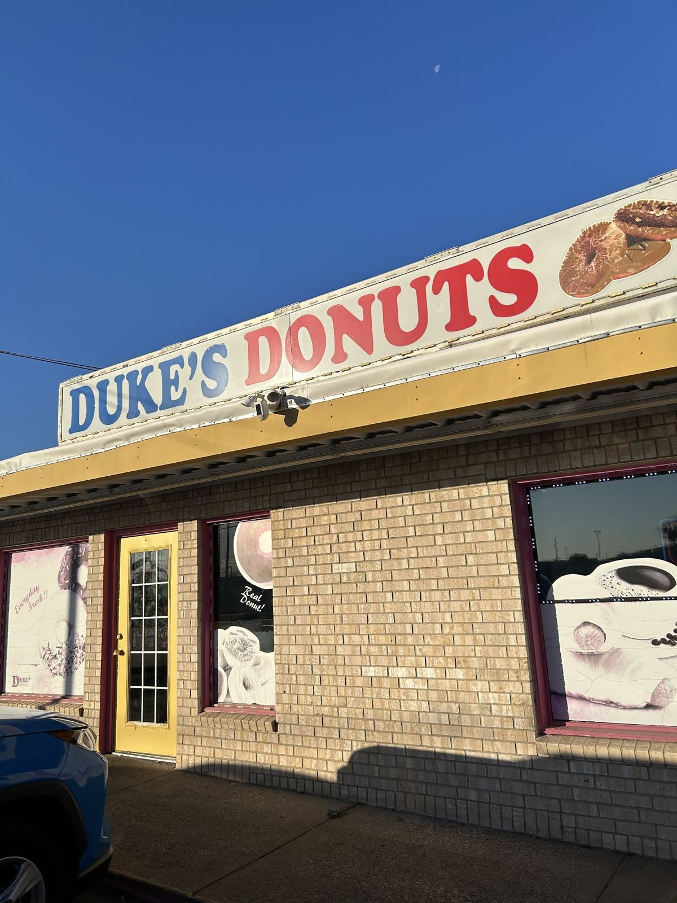

Local since 1976
Duke's has been a local favorite for fresh donuts and sausage rolls since 1976. Regulars say it's "the absolute best donuts in west Fort Worth," and the owners are known for friendly service, even at the crack of dawn.

A west Fort Worth favorite for fresh donuts, kolaches, breakfast sandwiches and sausage rolls, serving the neighborhood for nearly fifty years.
Duke's has been a local favorite for fresh donuts and sausage rolls since 1976. Regulars say it's "the absolute best donuts in west Fort Worth," and the owners are known for friendly service, even at the crack of dawn.

Every day 5 AM–12 PM
per public listing; confirm current hours
Doors open at 5 AM every day, per the listing.